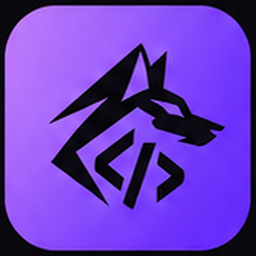

Coyote Studio
Start
Current file
Project (cpx start)
Debug
Continue
Over
Into
Out
Format
Native
Build lib
Search commands, files, symbols (Ctrl+P)
Coyote Studio
Start
New project...
Open folder...
Open file...
Command palette
Ctrl+Shift+P
Recent
Tips
Type a library class (for example
Shell
) and press Enter:
use "Standard.IO"
is added for you.
Ctrl+Space
completes,
F12
goes to a definition,
Ctrl+Shift+O
lists symbols.
Click the left margin to set a breakpoint,
F6
starts the debugger.
Programs that call
Shell.ReadLine()
read what you type in the Terminal panel.
TERMINAL
OUTPUT
PROBLEMS
GENERATED ML
End input
Clear
✕